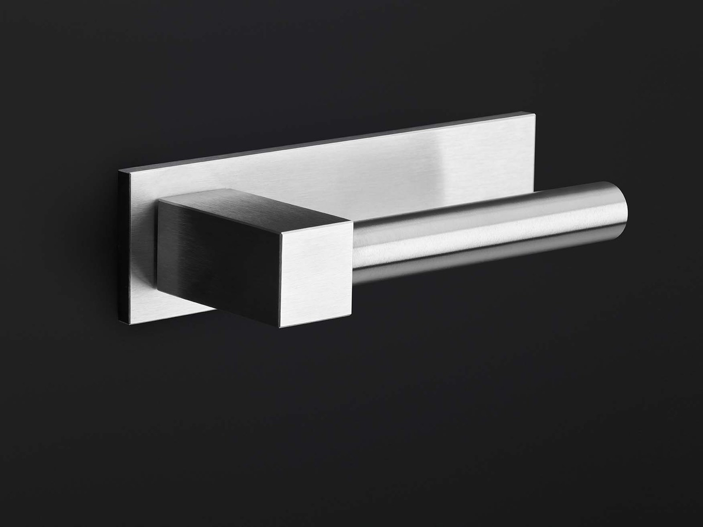

CREATURA
FORMANI
12 / 22
Коллекция

BOBBY
by Eric Kuster
Прямоугольное сечение плавно переходит в округлую рукоять.
Состав
двери · окна · мебель · аксессуары
Отделки
сатин. нерж. сталь, PVD сатин. чёрный, бронза